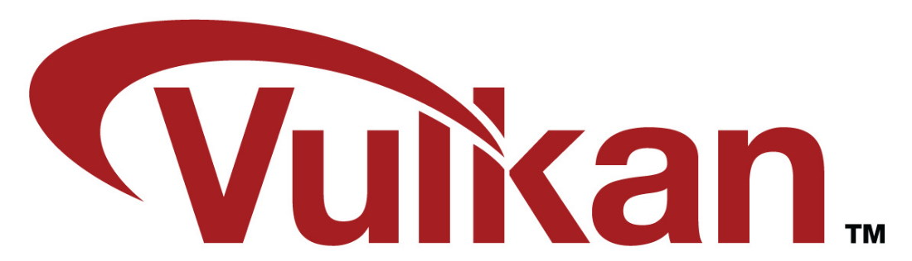
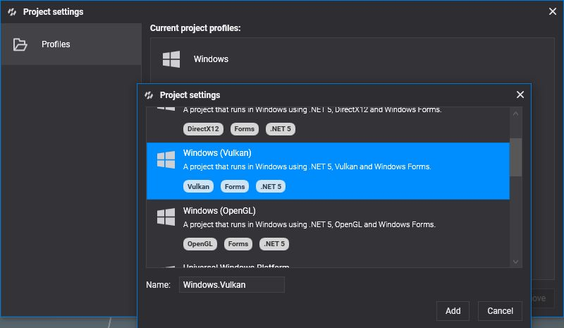
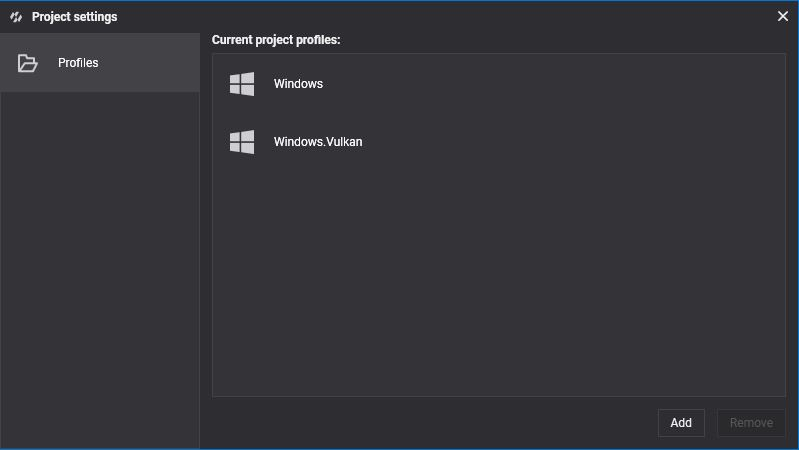

Vulkan

Vulkan is a low-overhead cross-platform API, It is the most recently API created by Khronos Group and targets high-performance real-time 3D graphics applications. Compared with DirectX 11 and OpenGL, Vulkan offer higher performance and more balanced CPU and GPU usage and provides a considerably lower-level API and parallel tasking for the application.
Khronos Group announced this API for first time at GDC 2015 referred to as the "next generation OpenGL initiative" or "OpenGL next" but finally the rename it to Vulkan. Vulkan is not backwards compatible with OpenGL and is derived from AMD's Mantle API which was donated by AMD to Khronos to try to standardize a low level API across the industry. Raytracing support was added recently to Vulkan and the API is very similar to DirectX12 Raytracing API so Vulkan support Evergine raytracing API.
Supported Vulkan devices
- Windows 8/10/11 x64/x86 desktop
- Linux x64/x86 desktop
- Android ARMv7/ARM64 tablet and mobile
- MacOS x64/x86/ARM64 desktop (using MoltenVK)
- iOS ARM64 tablet and mobile (using MoltenVK)
Checking Vulkan version
To make sure that you can visualize the rendering options Vulkan has available on your development PC, you will need to download and install the latest version of video card drivers for your graphics card. Download it from:
It is highly recommended download LunarSDK to install the latest developing and debugging tools for Vulkan graphics API.
Create a Graphics Context
To create a graphics context based on Vulkan just write:
GraphicsContext graphicsContext = new Evergine.Vulkan.VKGraphicsContext();
graphicsContext.CreateDevice();
Build & Run
You can select Vulkan API support during the new project creation from the Evergine launcher.
If the project already exists you can add the Vulkan support from Evergine Studio by clicking on Settings -> Project Settings.

Selecting and adding the profile for Windows (Vulkan).


You can run on Vulkan by clicking on File -> Build & Run -> Windows.Vulkan.